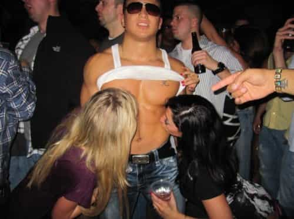

< < < Back
Analyzing The 5 Main Alpha Archetypes – Return Of Kings
Over the years the red pill community has coined many terms that have become regular jargon amongst its purveyors and beneficiaries. We’ve got a language all our own. Though the blue pill masses are largely ignorant to pervasive red pill vernacular such as the wall, cock carousel, and hypergamy, it seems these concepts are slowly (albeit reluctantly) beginning to make their way into the mainstream. The most ubiquitous lingo of all, however, is the word “alpha.”
The goal of reaching the oft-opined alpha status is the root of all things manosphere. It is the basis upon which most ideas in this sector originate. This is a term that most people, plugged and unplugged, are familiar with but few actually have a clear cut definition for it because of the broad subjectivity it’s privy to.
Women are unable to describe it. They can definitely feel it in their southern regions when their radars pick up the signal but they are utterly incapable of putting into words what they know an alpha to be. Men, on the other hand, have many different definitions because there are many different types.
The human element is the reason for this diversity. We bounce opposing schools of thought off each other in an attempt to narrow down the definition which can cause discussions to become convoluted. This is perfectly fine because men generally try to learn from each other while immersed in discussions with multiple interpretations and points of view. In the end everyone usually comes out with a bit more dimension in the way of their own thoughts and opinions on the matter.
I’m not going to attempt to dive into the psychological elements of an alpha because quite frankly, I’m just not smart enough for that level of mental gymnastics. However, I will concentrate my efforts on the different breeds of alphas and try to paint a clearer picture on their lifestyles, motivations, and overall satisfaction with who and what they are.
I will grade each alpha using these metrics…
PUA game level: Approaching, text game, shit test efficiency, social skills, escalation, closing percentage, et al.
Natural game level: How their lifestyle and persona naturally attracts men and women.
Frame: Composure in the face of unrest.
Congruency: Who they really are behind closed doors.
Overall Satisfaction: Their genuine contentment as a man.
…on this scale.
1-Little to non-existent
2-Poor
3-Fair
4-Good
5-Excellent
So now that we have our parameters in place, let’s get to it.
The Player
Summary: Also known as a pickup artist or “PUA,” the Player has mastered the art of bedding women. He tirelessly studies all of the state of the art pickup techniques to maximize his sexual encounters in the toxic sexual landscape that exists in the western hemisphere. The Player draws the most ire from white knights and their fem-fat sisters because of his ability to accumulate notches without much monetary or emotional investment.
His reputation is well-deserved, as he is able to swat away shit tests quickly and efficiently, moisten a girl’s panties with a few well-timed texts, and effortlessly escalate the interaction toward sex with a brilliant mix of kino and charm.
His notch count is higher than most alphas, but only because pussy is his main goal in life. He understands that sex is a numbers game so he approaches day and night in any venue at any time to keep his pipeline full. He also takes full advantage the easy lays available on dating and hookup sites to minimize dry spells. His carefully crafted profile and razor sharp text game sets ‘em up and his superhero level seduction skill knocks ‘em down. Simply put, he’s a stone cold assassin and never feels remorse for taking down a mark.
The Player always makes damn sure he’s on the cutting edge of the ever-changing hook up scene and devotes most of his time to perfecting his technique. His mission in life is to tag as much tail as he can before his dick shrivels up, and even then he’ll be hitting on the orderlies in his nursing home until he kicks the bucket.
PUA Game Level: 5
The Player is a professional pussy pirate who plunders his way to massive amounts of booty (pun intended). His PUA game is air-tight, which translates to plenty of lays.
Natural Game: 3.5
While his confidence and charisma gets him plenty of action with the ladies and draws the adoration of men, being around someone who lives for pussy and talks about it constantly, while fun and educational, can grow tiresome. Being one dimensional in this manner can wear thin on both sexes.
Frame: 3
Players can maintain frame within the bounds of a set but aren’t usually as stoic when confronted with real world strife. Staying cool during a pickup is one thing—keeping your wits about you in volatile situations not involving the acquisition of poon is quite another.
Congruency: 3
His solid game certainly makes him look like an alpha within the context of a one night stand or a hookup but no one knows who the hell he really is when the lights come back on…sometimes neither does he.
Overall contentment: 3.5
Online PUAs preach outcome independence from set to set which is great advice. But when Players hit a slump (which is inevitable) their self worth takes a sharp dive which ultimately leads to lowering their standards. They often resort to banging fatties from time to time to shake themselves free of sexual stagnation and get back in the saddle (which doesn’t do their self esteem any favors).
This is the main consequence of making pussy their sole source of validation in their lives. His morale is only high as long as he’s slaying sluts on the regular.
The Hobbyist
Summary: The Hobbyist is a man who, by default, doesn’t put pussy on a pedestal because that pedestal is already occupied by his obsession to master his chosen craft. He has little time for watching sports, playing video games, or mindless social media scouring because he enjoys doing things that require him to get off his ass and out of the house.
He regularly engages in hobbies such as hunting, building, working on cars, practicing a martial art or anything else that requires physical exertion, dedication, and attention to detail.
Because his schtick often requires long periods of isolation and seldom involves interaction with the opposite sex on a social or interpersonal level, pickup game is not his strong suit. However, women are naturally drawn to men who are deeply involved in masculine activities. This is what gets the Hobbyist more than his share of female attention. And because he devotes more time to his passion than he does pandering to them they tend to stick around for a while.
Like any other man, he loves women and the sexual benefits they offer him. But if given the choice between engaging in coitus and finishing the paint job on that ’67 Mustang he’s restoring, he’s going to choose the latter more often than not. This is exactly what keeps his women hot for him.
PUA game level: 2.5
The Hobbyist possesses a minimal working knowledge of certain tenets of basic game so he’s not completely ignorant when it comes to dealing with girls. But he doesn’t overly concern himself with things like text game or how to deal with shit tests because he just doesn’t have the time. Most of his time is spent cleaning his guns or making sure his camping gear is in tip top shape for his next outdoor excursion.
Natural game: 4
As stated above women love being in the presence of rugged men who spend little time on their couches. The fact that he often chooses his hobby over her works as a natural shit test repellant making her all the more clingy. Further, men who share these hobbies have a way of finding each other so the Hobbyist has no trouble attracting both men and women into his world.
Frame: 4.5
Getting out of the house on a regular basis will physically and mentally test a man in many different ways. Surviving and ultimately thriving in these situations will temper him like steel resulting in near unshakable poise.
Congruency: 5
You can’t fake the funk in this neck of the woods as posers and wannabes are quickly exposed and discarded. The Hobbyist is the genuine article and his audience has no bearing on who he is.
Overall satisfaction: 4.5
The Hobbyist is very satisfied with his life. His morale is always high because women take a backseat to the adventure he seeks. He knows that a little more game would give him a bump in SMV and he would certainly like to have more but it’s not a priority. Game is more of a luxury than a necessity as far as he’s concerned and that’s fine with him.
The Asshole

Summary: Often referred to as a “douchebag” or a “meat head,” the asshole is brash, selfish, and is one cocky son of a bitch. He’s a ball buster extraordinaire and never hesitates to loudly call girls out on their bullshit as soon as he sniffs it out. His jerkboy game relies heavily on negging, teasing, and AMOGing, all of which are highly effective. He scores pussy at a high rate because as we all know, chicks can’t get enough of these guys.
Though the asshole doesn’t live for pussy to the degree the Player does, the disparity isn’t wide. If he sees a girl he wants he’ll walk right up and strike up conversation with her and will make no bones about what he’s angling for. His abundance mentality has made him immune to rejection. Blowouts don’t faze him in the least because after all, “There’s always other bitches out there, bro!”
PUA game level: 4
This guy runs asshole game to perfection. Plus his non-existent approach anxiety gives him more swings at the piñata, which gives him a substantial advantage. When girls sense he doesn’t give a shit one way or the other they drop their panties almost involuntarily.
Natural game level: 3
The Asshole can very difficult to be around at times. Men give each other shit as a matter of habit but this guy often doesn’t know when to turn it off. He’s also notoriously hot-tempered which can bring about unwanted trouble.
Frame: 2
A man who lets his emotions get the better of him is a man who has some growing up to do.
Congruency: 4.5
This dude is the same around men and women alike. Similar to the Hobbyist, his audience rarely affects his behavior.
Overall satisfaction: 4
The Asshole is pretty happy with who he is and if you don’t believe me just ask him. Though his impetuous personality can alienate himself from men outside of his inner circle (which he gives exactly zero fucks about), his act is a sure-fire vagina vacuum. And as long as girls continue to reward his cocksure attitude he’s not changing for anybody, nor should he.
The Conqueror
Summary: One word describes the Conqueror’s purpose in life: victory. This alpha loves the thrill of overcoming challenges no matter what they are. Whether it’s hiking the Appalachian Trail, acquiring a shit business and transforming it into a cash cow, or training a Level 3 Schutzhund German Shepherd, if it’s a mountain he has to climb it.
Slaying dragons is what this man lives for and that gives him time for little else. His lifestyle reflects his unflappable focus. His daily routine completely revolves around whatever his obsession is at the time. The moment he captures that flag he’s onto the next conquest because each triumph only feeds his insatiable desire to bring more Goliaths to their knees. He is fiercely competitive and his binary definition of life (winning and losing) is the fuel that powers his drive.
PUA Game level: 1
The Conqueror has better shit to do than play silly little texting games or tolerate the bratty behavior of a woman for sex. “PUA” game is something he has neither the time nor desire to learn. On the flipside, he’s likely to laugh at a shit test mistaking it for a joke which, ironically, is pretty solid game whether he realizes it or not.
Natural Game: 5
Scoring victories in life on a consistent basis requires many different traits. A high social aptitude is one of the most important. The Conqueror’s ability to be socially dominant in any situation commands the respect of men whilst generating seismic tingles beneath the undergarments of female onlookers. His natural game is far more effective than any pickup game out there.
Frame: 5
A man has who’s got a few hard-fought victories under his belt has no doubt experienced much adversity on his path to triumph. He has learned that keeping a level head is paramount to navigating his way through catastrophe. These battles have forged him into an immovable object, making him impossible to rattle.
Congruency: 5
His mission permeates every aspect of his life making his public and private demeanor symmetrical.
Overall satisfaction: 3
For all of his successful conquests the Conqueror is never fully satisfied with his life. He always wants more. He will briefly celebrate his victories and enjoy the fruits of his labor on occasion, but he knows that complacency leads to mediocrity. In order to keep his edge he must exist in a constant state of malcontent.
The Alpha Provider
Summary: If ever there was a male version of a unicorn, the Alpha Provider is it. For he is the one man able to fulfill both sides of a woman’s dualistic imperative, which is a near impossible task in this day and age.
He brings home enough bacon to provide his woman the kind of lifestyle that gives her validation and comfort, as well as providing for their offspring. Keeping himself in optimal physical condition assures his woman of good, masculine genes making her willing to bear as many of his children as he wishes.
The fabled Alpha Provider is the captain of his ship and has the genuine respect and adoration of both his woman and his children. He does not tolerate foolishness in his household and is quick to punish such shenanigans. But he is equally bountiful whereas he rewards his woman for the nurturing of his brood, her sexual loyalty, and the upkeep of his domicile and property. Though it took him quite a while, his patience and red pill wisdom allowed him to successfully find a woman worthy to be his first mate.
A man such as this is the object of every female’s desire and they seldom hide it, often openly flirting with him even in the presence of his woman. This is precisely what keeps her motivated to stay fit and feminine while keeping him sexually satiated and his domain in pristine condition.
PUA Game Level: 1
His pickup muscles have atrophied as a result of his current state and the fact that women throw themselves at him on a regular basis as a result of his…
Natural Game: 5
A true alpha exudes all of the physical and mental traits that make him attractive company to either sex.
Frame: 4.5
The one thing keeping him from a 5 is his children. Every man has permission to lose his shit should harm befall one of his children. Other than that he keeps his faculties under complete control.
Congruency: 5
A man who is able to build and lead a strong nuclear family in today’s world is incapable of being a beta boy outside the confines of his castle. He is an Alpha Male through and through regardless of his environment.
Overall satisfaction: 5
Having reached the pinnacle of alphadom, the Alpha Provider has all that he naturally desires (not needs) out of life: A dutiful woman happy and willing to embrace traditional sex roles, children to pass on his legacy, enough money for the upkeep of his investment, and the satisfaction that comes with accomplishing this increasingly difficult feat. A man like this truly has it all.
Takeaway
I’m sure this article leaves much for debate and, as always, I strongly encourage readers to voice their opinions and input. But no matter what you agree or disagree with one cannot deny the one trait every one of these alphas in common: They do what they want, how and when they want, and without apology. They are unafraid to be who they are and take what they know to be rightfully theirs be it money, women, accomplishment or anything else that elevates their lives as men.
We all have a little of every alpha type in us. Personally, I have a strong dose of Hobbyist with a dash of Player and Asshole if the situation calls for it. I’ll also readily admit that that I’d love to be the Alpha Provider and I’d bet my Jeep that better than 9 out of 10 men here would too if the opportunity presented itself.
The truth is, we are all hard-wired to want a wife and kids and I’m willing to concede that even though this country’s women have jaded me to the point where I’ve all but given up on that dream, my hard drive hasn’t been wiped of its original programming and men who are honest with themselves would agree.
So which Alpha(s) are you?
Read Next: Alpha Is Anything


{kind=link}